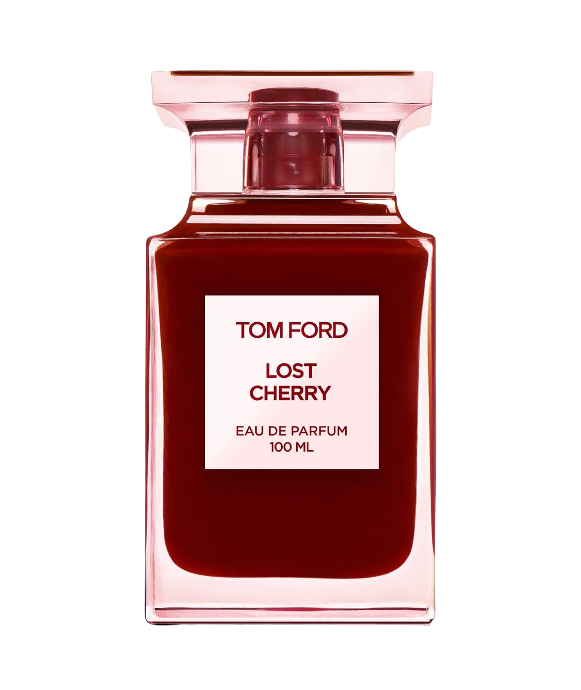

Рекомендация 01 / 04
92% совпадение

Луиза Тернер
Tom Ford Lost Cherry
Чёрная вишня с горьким миндалём даёт тепло и немного игры, а роза и жасмин в сердце делают аромат вечерним, а не десертным. Он собирает после долгого дня и звучит уверенно — ровно то, что вы просили.
Ощущается — как бокал вишнёвого ликёра в тёмном баре после дождя
Верхняя нота
Чёрная вишня
сочная, ликёрная, с горьким миндалём
Сердце
Турецкая роза
тёмная, с жасмином самбак
База
Бобы тонка
сладкие, с сандалом и перуанским бальзамом
✓ Без ванили на первом плане, уда и кожи — эти ноты вы исключили
Текстура
густая, бархатная
Температура
тёплая
Образ
вишня, бархат, лампа
этот аромат
ваш запрос
Шлейф
ЗаметныйБлизкийУмеренный · запросЗаметный
Стойкость
≈ 8 ч06 ч · запрос12 ч
Сезон и погода
Холодные вечера · осень и зима
Где раскрывается лучше